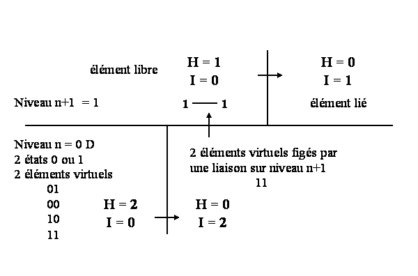
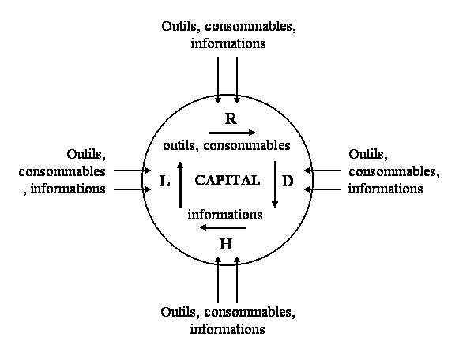
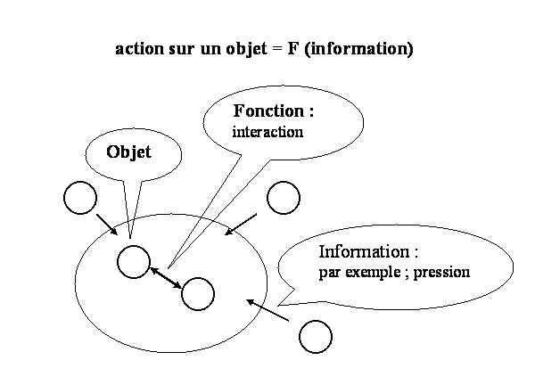
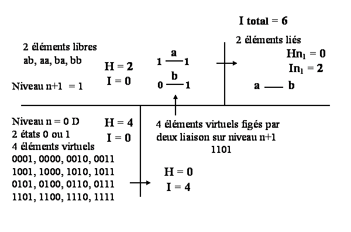

|
INFORMATION
L'information est une notion lièe à une utilité, à un objectif spécifique et une stratégie évolutive. Que se soit le démon de Maxwell qui trie les molécules chaudes et les molécules froides ou que se soit le démon de Szilard qui localise une particule en mouvement pour la faire heurter une parroi, ils ont chacun un objectif spécifique, produire de l'énergie à partir du mouvement thermique aléatoire des particules. L'exemple de Jacques Hebenstreit (universalis Encyclopaedia 2002 V.12 p,118) conceranat la recherched'un document dans une pile, nous montre que l''information sur la couleur des documents recherché qpermet de retrouver rapidement un document spécifique se trouvant dans une pochette bleue. L'information est donc un concept relatif à une notion d'utilité (production d'énergie, recherche d'un document) et de fonction de l'information. Plus généralement, les interactions sont une réalité que les systèmes analysent comme étant des informations utiles pour la construction de leur propre identité, pour évoluer vers leurs propres objectifs. Les événements des niveaux inférieurs (n-x, x>0), ainsi que les événement du niveau de référence pour l'analyse (n) constituent du capital lorsqu'ils sont utilisé en tant qu'nformation pour les systèmes. Le capital informationnel est la capacité à percevoir à travers les interactions, des informations, donc à traiter des données de l'environnement interne et externe, pour optimiser son propre fonctionnement. L'information peut donc être comprise comme étant le rapport entre des événements et des objectifs. C'est la dynamique organisationelle qui, au moyen de l'information, permet de produire sa propre identité. La dynamique de chaque système produit une conscience de type informative sur les relations entre les éléments qui constitue le système. Les relations entre les éléments, leur logique évolutive sont les informations manipulées par le système pour engendrer avec plus d'efficacité son propre développement. L'émergence systémique est la capacité d'un système à considérer la logique évolutive de ses éléments comme source d'information pour mieux contrôler et manipuler ses éléments dans le dessin de développer le système. Comprendre la logique évolutive, c'est acquérir des informations et les utiliser à travers les logiques fondamentales du développement complexe. Plus il a d'informations, plus le système s'organise et optimise son fonctionnement en prennant des options qui sont les moins aléatoire possibles. L'information réduit en effet les choix et donc les sources d'erreur dans les choix à effectuer. Plus il y a d'information, plus les choix sont rationnels par rapport à l'objectif du système et moins il y a d'évolution aléatoire. Ainsi, pour un système social, dont l'émergence est le symbole, l'information qui permettera d'optimiser la production symbolique, la connaissance, est constitué des flux symboliques, à travers des interactions symboliques. Les flux symboliques sont l'ensemble des informations que le système donne, reçoit, échange et partage. Cette information constitue le capital social, qu'elle soit de l'information pure (connaissance) ou des objets ayant une valeur symbolique, donc une valeure sociale. L'information des niveaux inférieurs (biologique ou physique) est donc aussi capable de construire le capital social car ils ont une valeure symbolique dans le niveau social. L'inverse n'est évidemment pas vrai. Le niveau biologique ne peut pas intégrer la dimention sociale dans sa dynamique évolutive. Le social constitue pour le biologique une contrainte d'ordre supérieure. Au niveau biologique, l'information est stockée dans les formes (3D), notamenet l'ADN, qui constitue le capital biologique. L'appartenance ou non d'une molécule à un organisme, se réalise par la reconnaissance des formes à travers le système immunitaire. La forme constitue l'information des systèmes biologiques alors que les symboles constituent l'information des systèmes sociaux. L'interaction entre les membrannes, les protéines et les molécules de l'environnement, produit des informations qui engendrent des cascades de réactions à l'intérieur de la cellule. En biologie le concept d'information est semblable aux sciences sociales et aux sciences physiques, comme l'a développé Shannon. Le programme génétique est semblable à l'intelligence des individus. Il est l'actualisation de principes fondamentaux (minimisation des contraintes spatio-temporelles) qui orient la dynamique des systèmes. Ces principes sont comparables à une fonction f(x). Les variables sont l'information x dans f(x) qui alimente ces fonction qui agissent sur les objets (éléments ou systèmes) physiques, biologiques ou sociaux. La signification de l'information prend un sens à travers le programme génétique qui dépend des contraintes de l'environnement à travers les signaux reçu de l'environnement, et à travers la fontion systémiques. Les interaction du système avec son environnement constituent de l'information i lorsqu'elle est intégré dans le calcul de la fonction de développement f(i). Rappelons que cette fonction systémique est décrite à travers le concept du champ spiralé. La même logique peut être définie pour les niveaux physiques, que se soit les champs (2D), ou l'énergie(1D). Les démons de Maxwell et de Szilard travaillent à ce niveau particulaire à une dimension. On sait qu'à ce niveau, on ne peut pas connaître à la fois la vitese et la position d'une particule. Cela est bien compréhensible puisque lorsqu'on se trouve dans un espace à 1 dimension. Soit cette dimension est le temps, soit elle est l'espace, puisque ces deux grandeurs sont intimenet liées. La signification de l'information au niveau particulaire est de deux ordre. Soit elle est relative à la densité dans l'espace, présidant les phénomènes d'entropie, soit elle est relative à la densité dans le temps et elle est relative aux phénomènes de complexification. Nous somme ici au coeur du phénomène de minimisation des contraintes spatio-temporelles qui président l'évolution des systèmes. Enfin au niveau virtuel, de dimension 0, les éléments discrets, des 0 ou des 1 (le bien ou le mal, le nord ou le sud...), se prètent bien à l'analyse mathématique qui y est infiniment précise à ce niveau, mais seulement à ce niveau. La connaissance de cet état virtuel peut être quantifiée. Elle ne le sera pas en valeur d'énergie qui n'apparaît qu'au niveau 1 D. Au niveau virtuel, l'information élémentaire est: N/n = 2 soit ; 2 états possibles / 1 état définit I = Lg2 (N/n) = 1 Ainsi, si nous pouvons affirmer qu'un élément virtuel est dans l'état 1 ou 0, nous possédons une quantité d'information élémentaire de 1, c'est-à-dire un capital de 1. L'entropie de cet élément virtuel est égale à : H = Somme ( (ni/N) lg2 N/ni) ) = 1 L'entropie est la quantité d'information moyenne que va fournir l'expérience de déterminer l'état du bit. L'expérience va ordonner parfaitement le système, puisque le choix d'une variable fixe automatiquement l'autre. En passant au niveau supérieur, celui de l'énergie, c'est-à-dire d'une liaison de type corde qui fige deux éléments virtuels dans un état définit, on obtient un nouveau type de capital, c'est-à-dire d'information et d'entropie. Le capital est formé de la corde qui fige les deux particules virtuelles dans le niveau inférieur et de l'information du niveau supérieur concernant les cordes (énergie). Il y a une croissance de la somme (Information + entropie) à travers l'émergence des niveaux. An sein d'un niveau, il y a une transformation entre entropie et information. Il y a donc conservation de la somme I + H = cte, au sein d'un niveau. Avec l'apparition d'un nouveau niveau, d'une nouvelle dimention, il y a apparition d'un nouvel ordre / désordre. L'entropie diminue sur le niveau inférieur, alors qu'elle apparaît au niveau supérieur.  Le passage sur le niveau 0 D d'une entropie élevée à une entropie basse viole apparement le deuxième principe de la thermodynamique. L'entropie du niveau o D diminue, alors que l'information sur ce même niveau augmente. En réalité, puisque l'entropie s'additionne (variable extensive), il est possible de lui additionner la valeur qui apparaît sur le niveau supérieur (1 D ). Le nouveau niveau exprime un nouveau degré de liberté dans une nouvelle dimension. Il existe un principe de conservation de la somme I + H au sein d'un niveau (horizontal) et de la croissance, non plus strictement de l'entropie, mais de la somme I + H entre les niveaux (verticalement). Nous observons aisément que lorsdque l'entropie augmente dans un système, il y a une perte d'information par consommation du capital. Ainsi, la complexification à travers les niveaux permet une augmentation globale de la somme I + H. Cela permet de justifier la diversification et la complexification des niveaux. Parallèlement à cette augmentation, liée à l'augmentation des degrés de liberté, il y a une augmentation du capital. qui fige les états et diminue les degrés de libertés dans des états éloignés de leurs positions d'équilibre, dans laquelle l'entropie est minimum. Nous développons cette approche de manière plus complète dans une étude sur la structure systémiques des particules élémentaires. L'information existe à tout les niveaux systémiques. Elle correspond à une composant des capitaux. Transmettre de l'information, c'est transmettre du capital. Donner des biens, des objets qui ont une valeure sociale, c'est donner des symboles et des informations (flux éducatifs). Prendre des biens, du savoir, des matières premières, c'est prendre de l'information (flux hiérarchiques). Echanger des valeurs symboliques, c'est échanger de l'information (flux économiques). Partager des symboles, c'est partager de l'information (flux sociaux). L'information est mesurés à travers sa capacité à diminuer le nombre de possibilité, le nombre de variantes ou d'options, lorsque l'on cherche à atteindre un objectif définit. L'information nous permet de faire le bon choix plus rapidement. L'information utile pour l'organisation, correspond à des flux en provenance de l'environnement (émetteur) qui entrent dans le système (receveur), qu'ils soient de type R, D, H ou L. Le système a également une stratégie d'émission d'information dans l'environnement pour produire un environnement plus favorable à son propre développement. L'information à un objectif d'organisation interne, alors que les autres capitaux constitués d'éléments de niveaux inférieurs ont pour objectifs la production de l'identité du système (production donnée, vendue, prise ou partagée). L'information ne correspond pas à l'ensemble des capitaux. Elle correspond à la partie des capitaux internes qui produisent de l'organisation. L'information permet de différencier les éléments, et ainsi, de faciliter les choix selon des critères internes liés aux oblectifs du système. L'information peut être considérée comme un élément au même titre qu'un consommable qui circule entre les systèmes. Le capital mesuré en terme d'information rejoint le capital mesuré en terme de capacité à produire des flux, comme nous le décrivons dans le concept du développement complexe, car la somme de l'information des niveaux In + I(n-1) + I(n-2) + ... I(n=0) est égale à l'ensemble des capitaux responsables des flux. On peut distinguer deux type d'éléments entrant dans les systèmes. Ces deux types sont souvent combinés. Les outils, les consommables, et les informations. Les premiers ont pour objectifs la production, les seconds ont pour objectifs l'organisation. Les premiers sont semblables à des éléments statiques qui sont transformés, travaillés, modelés, construits au moyen d'une dynamique dont la logique est construite par des logiques très générales, décrites par le concept du développement complexe, pouvant être exprimées par des algorithmes. Les variables de ces fonctions sont les informations externes, celles de l'environnement, et internes, celle du système. L'organisation est rendue possible par les flux hiérarchiques qui imposent des contraintes sur l'environnement, donc qui donne des ordres que l'environnement exécute. La cascade des flux hiérarchiques au sein d'un systèmes permet l'organisation. Observons également que se sont les liens et les ruptures qui conduisent à la production, à l'élaboration de nouveaux produits et de nouveaux services. En revanche, c'est la différenciation qui est à l'origine de l'information qui produit l'organisation. En effet, l'information permet de différencier les éléments, les situations, afin de restreindre les choix pour mieux les orienter.  Plus un système possède du capital interne, plus il a les capacités d'utiliser les interactions avec l'environnement pour en faire des informations capable d'optimiser les prises de décisions, donc de diminuer les choix aléatoires. La différence fondamentale entre les flux d'informations et les flux d'éléments identitaires est qu'ils construisent deux capitaux différents. Le capital identitaire libère progressivement des flux d'éléments statiques, et le capital informationnel libère progressivement des flux d'information dynamique. Cela est semblable à des éléments statiques liés entre eux par des interactions dynamiques et donnant ainsi naissance à de nouveaux éléments d'ordre supérieur. C'est la raison pour laquelle nous considérons que l'interaction sur un niveau n est de l'information pour ce niveau, alors qu'il sera considéré comme un élément pour le niveau n+1. La différence entre flux et capitaux est semblable à la différence entre le temps et l'espace. Une relation fondamentale qui est à la base des algorithmes qui gèrent la construction des systèmes, est la dynamique de minimisation des contraintes spatio-temporelles. Dans cette dynamique de minimisation, il exsite une fonction élémentaire, la minimisation, des variables qui correspondent aux informations et des objets, les éléments, sur lesquels agit cette fonction. Plus les informations sont complêtes et vastes, plus la minimisation sera efficace et plus le système évoluera en interne vers la complexité. Si peu d'informations sont disponibles, non pas forcément que le système n'est pas suffisament en interaction avec son environnement, mais qu'il n'as pas le capital interne suffisant pour transformer les relations en informations. alors le système minimisera mal ses contraintes, car les boucles de rétroactions responsable de la dynamique sont peu efficaces.  Le résultat global des capitaux internes, formés à la fois d'information et d'éléments, est la production de flux extérieurs. Une prédominance d'éléments permettera des flux de type gros débits et peu de pression. Une prédominance d'information permettera des faibles débits à haute pression. Dans le premier cas, la faible organisation associé à la faible performance unitaire, est compensé par le fort débit. Dans le second cas, le manque d'éléments est compensé par une très bonne organisation. La bonne organisation c'est celle dans laquelle les bons choix sont réalisés. Le capital est donc formé d'une composante informationnelle et d'une composante objective (objets des interactions). L'information fournit au système dynamique les données pour optimiser les processus. La liaison, phénomène dynamique, fige les états, de sorte qu'elle produit dans le niveau supérieur une nouvelle particule ayant un capital de 4. Sur le niveau sur lequel la dynamique est réalisée, on parle d'information, alors que sur le niveau supérieur, c'est un élément. La capacité pour un élément à produire des flux se définit dans les niveaux inférieurs. Par exemple: une machine (n-1), placé dans un contexte social (n) pour qu'elle fonctionne, va effectuer un travail d'ordre physique, par exemple usiner une pièce ou déplacer un objet (n-1). Elle opère ainsi sur les niveaux inférieurs. La somme des capitaux d'un système est égal au capital constitué par les éléments des niveaux inférieurs et par le capital constitué de l'information régissant le niveau de référence sur lequel l'analyse est menée. Le capital permet de produire plus que l'élément à lui même accumulé. En effet, en passant d'un niveau à un autre, on augment les degrés de liberté, donc la capacité à capitaliser. Cependant, si certains capitaux produisent plus de flux que ce qu'ils ont consommées pour être élaborés (outils), d'autres, les consommables, ne sont que l'accumulation d'un élément, le stockage d'un élément sous forme élaboré, une forme qui n'est pas totalement dégradée. 
|
|